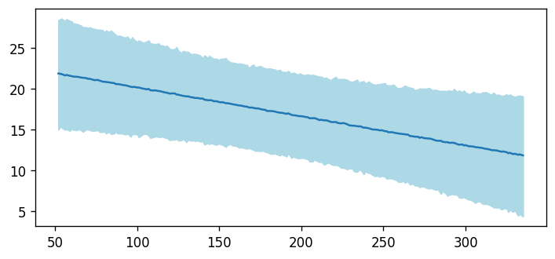
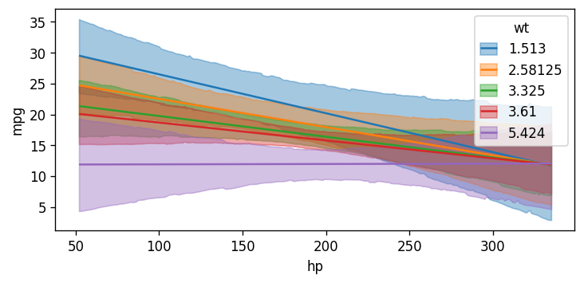

[1]:
import arviz as az
import bambi as bmb
import numpy as np
import matplotlib.pyplot as plt
import pandas as pd
from bambi.plots import plot_cap
import importlib
import sys
%load_ext autoreload
%autoreload 2
[2]:
data = pd.read_csv("data/mtcars.csv")
data["cyl"] = data["cyl"].replace({4: "low", 6: "medium", 8: "high"})
data["gear"] = data["gear"].replace({3: "A", 4: "B", 5: "C"})
data["cyl"] = pd.Categorical(data["cyl"], categories=["low", "medium", "high"], ordered=True)
model = bmb.Model("mpg ~ 0 + hp * wt + cyl + gear", data)
idata = model.fit(draws=1000, target_accept=0.95, random_seed=1234)
Auto-assigning NUTS sampler...
Initializing NUTS using jitter+adapt_diag...
Multiprocess sampling (4 chains in 4 jobs)
NUTS: [mpg_sigma, hp, wt, hp:wt, cyl, gear]
Sampling 4 chains for 1_000 tune and 1_000 draw iterations (4_000 + 4_000 draws total) took 17 seconds.
[3]:
#model.data
[4]:
idata
[4]:
arviz.InferenceData
-
<xarray.Dataset> Dimensions: (chain: 4, draw: 1000, cyl_dim: 3, gear_dim: 2) Coordinates: * chain (chain) int64 0 1 2 3 * draw (draw) int64 0 1 2 3 4 5 6 7 ... 992 993 994 995 996 997 998 999 * cyl_dim (cyl_dim) <U6 'low' 'medium' 'high' * gear_dim (gear_dim) <U1 'B' 'C' Data variables: hp (chain, draw) float64 -0.07071 -0.07082 ... -0.1352 -0.08599 wt (chain, draw) float64 -4.84 -5.009 -6.231 ... -7.9 -8.461 -4.432 hp:wt (chain, draw) float64 0.01482 0.01484 0.02625 ... 0.03348 0.01707 cyl (chain, draw, cyl_dim) float64 38.35 36.38 36.95 ... 37.6 36.28 gear (chain, draw, gear_dim) float64 1.593 3.538 1.495 ... 1.097 1.757 mpg_sigma (chain, draw) float64 1.84 1.798 2.658 ... 2.821 2.903 1.919 Attributes: created_at: 2023-04-15T20:27:23.303094 arviz_version: 0.15.1 inference_library: pymc inference_library_version: 5.2.0 sampling_time: 17.24565577507019 tuning_steps: 1000 modeling_interface: bambi modeling_interface_version: 0.10.0.dev -
<xarray.Dataset> Dimensions: (chain: 4, draw: 1000) Coordinates: * chain (chain) int64 0 1 2 3 * draw (draw) int64 0 1 2 3 4 5 ... 994 995 996 997 998 999 Data variables: (12/17) step_size (chain, draw) float64 0.05557 0.05557 ... 0.02974 perf_counter_start (chain, draw) float64 8.886e+04 ... 8.887e+04 process_time_diff (chain, draw) float64 0.01714 0.001107 ... 0.01681 reached_max_treedepth (chain, draw) bool False False False ... False False diverging (chain, draw) bool False False False ... False False step_size_bar (chain, draw) float64 0.0385 0.0385 ... 0.03603 ... ... smallest_eigval (chain, draw) float64 nan nan nan nan ... nan nan nan max_energy_error (chain, draw) float64 -0.2126 0.4269 ... -0.5456 n_steps (chain, draw) float64 255.0 15.0 ... 127.0 255.0 largest_eigval (chain, draw) float64 nan nan nan nan ... nan nan nan index_in_trajectory (chain, draw) int64 -80 -2 -93 -35 ... -49 45 38 91 lp (chain, draw) float64 -98.82 -102.9 ... -101.0 -98.73 Attributes: created_at: 2023-04-15T20:27:23.309581 arviz_version: 0.15.1 inference_library: pymc inference_library_version: 5.2.0 sampling_time: 17.24565577507019 tuning_steps: 1000 modeling_interface: bambi modeling_interface_version: 0.10.0.dev -
<xarray.Dataset> Dimensions: (mpg_obs: 32) Coordinates: * mpg_obs (mpg_obs) int64 0 1 2 3 4 5 6 7 8 9 ... 23 24 25 26 27 28 29 30 31 Data variables: mpg (mpg_obs) float64 21.0 21.0 22.8 21.4 18.7 ... 15.8 19.7 15.0 21.4 Attributes: created_at: 2023-04-15T20:27:23.311684 arviz_version: 0.15.1 inference_library: pymc inference_library_version: 5.2.0 modeling_interface: bambi modeling_interface_version: 0.10.0.dev
[6]:
fig, ax = plt.subplots(figsize=(7, 3), dpi=120)
(fig, ax), pps, cap_data = plot_cap(
model, idata, "hp", pps=True, ax=ax
);

[13]:
[17]:
# posterior predictive distribution (forward sampling)
# i.e., plot_cap at observation level
fig, ax = plt.subplots(figsize=(7, 3), dpi=120)
plt.plot(
cap_data["hp"],
pps['posterior_predictive']['mpg'].mean(('chain', 'draw'))
)
plt.fill_between(
x=cap_data["hp"],
y1=pps['posterior_predictive']['mpg'].quantile(0.025, ('chain', 'draw')),
y2=pps['posterior_predictive']['mpg'].quantile(0.975, ('chain', 'draw')),
color="lightblue"
);

[8]:
cap_data
[8]:
| hp | wt | cyl | gear | |
|---|---|---|---|---|
| 0 | 52 | 3.21725 | high | A |
| 1 | 53 | 3.21725 | high | A |
| 2 | 54 | 3.21725 | high | A |
| 3 | 56 | 3.21725 | high | A |
| 4 | 57 | 3.21725 | high | A |
| ... | ... | ... | ... | ... |
| 195 | 329 | 3.21725 | high | A |
| 196 | 330 | 3.21725 | high | A |
| 197 | 332 | 3.21725 | high | A |
| 198 | 333 | 3.21725 | high | A |
| 199 | 335 | 3.21725 | high | A |
200 rows × 4 columns
[12]:
pps['posterior_predictive']['mpg'].mean(('chain', 'draw'))
[12]:
<xarray.DataArray 'mpg' (mpg_obs: 200)>
array([21.77328205, 21.75429302, 21.75015065, 21.71817842, 21.64613765,
21.58779738, 21.56237658, 21.55033089, 21.44261883, 21.40085415,
21.37342827, 21.27034257, 21.25109412, 21.19067472, 21.1384935 ,
21.06546649, 21.06242881, 21.01921592, 20.94234442, 20.8999071 ,
20.82040692, 20.85453948, 20.78778288, 20.66431695, 20.63466151,
20.56513859, 20.5441038 , 20.464081 , 20.49722804, 20.37147149,
20.33584592, 20.2557482 , 20.29896622, 20.21833974, 20.18630047,
20.04378052, 20.04028697, 20.02511541, 19.93717582, 19.92753772,
19.89570078, 19.75259372, 19.8281578 , 19.75347577, 19.65200963,
19.64728085, 19.52477021, 19.44597552, 19.45177413, 19.37332307,
19.36787548, 19.27793716, 19.25047879, 19.21095954, 19.18244104,
19.08073446, 19.09735844, 18.94172843, 18.94862873, 18.9097839 ,
18.81408095, 18.75792274, 18.75401178, 18.61096295, 18.68207151,
18.6307348 , 18.57286015, 18.51276696, 18.3691676 , 18.42435556,
18.30068138, 18.31322263, 18.33336601, 18.25375789, 18.19406352,
18.12248872, 18.01384679, 18.01229386, 17.92330878, 17.8821393 ,
17.81100368, 17.75094282, 17.74831301, 17.69400063, 17.66531534,
17.61702594, 17.47688895, 17.42509945, 17.4381858 , 17.34997228,
17.33928922, 17.26237147, 17.16186216, 17.19077075, 17.09931796,
17.09216885, 17.01975131, 17.00812588, 16.89289105, 16.91165243,
16.86074552, 16.81622585, 16.70514748, 16.67127863, 16.61794464,
16.58238906, 16.56039563, 16.44777179, 16.43511879, 16.34871853,
16.32781671, 16.3157639 , 16.27085348, 16.15901296, 16.14816037,
16.11629867, 16.00142289, 16.01352696, 15.91139661, 15.86741994,
15.78862767, 15.75852903, 15.68976542, 15.70894338, 15.61713722,
15.5801808 , 15.43881767, 15.46810199, 15.45715393, 15.35298314,
15.36436662, 15.22528723, 15.20855618, 15.10489353, 15.12064643,
15.08787615, 15.02644561, 15.00907036, 14.90288816, 14.86510184,
14.83435457, 14.74285852, 14.71836834, 14.70759099, 14.54963342,
14.56273024, 14.46847902, 14.42729447, 14.4267451 , 14.44896133,
14.36348742, 14.17534087, 14.15677899, 14.22164071, 14.15006815,
14.01880349, 14.02145857, 13.94650924, 13.92532048, 13.78302725,
13.79539493, 13.76753538, 13.70679106, 13.67492215, 13.61410476,
13.53678754, 13.51814305, 13.44425665, 13.4650309 , 13.36050581,
13.28284163, 13.29263203, 13.1810348 , 13.12952363, 13.08871855,
13.00385808, 12.9830582 , 12.89509411, 12.90646495, 12.90975526,
12.82767124, 12.75762943, 12.76465301, 12.66381213, 12.67277787,
12.56404929, 12.48981878, 12.45732784, 12.42552258, 12.40691674,
12.32148184, 12.27211214, 12.18055399, 12.19815691, 12.10672955,
12.09135056, 12.02496374, 11.95250967, 11.92425349, 11.84388805])
Coordinates:
* mpg_obs (mpg_obs) int64 0 1 2 3 4 5 6 7 ... 192 193 194 195 196 197 198 199[19]:
pps['posterior']
[19]:
<xarray.Dataset>
Dimensions: (chain: 4, draw: 1000, cyl_dim: 3, gear_dim: 2, mpg_obs: 200)
Coordinates:
* chain (chain) int64 0 1 2 3
* draw (draw) int64 0 1 2 3 4 5 6 7 ... 992 993 994 995 996 997 998 999
* cyl_dim (cyl_dim) <U6 'low' 'medium' 'high'
* gear_dim (gear_dim) <U1 'B' 'C'
* mpg_obs (mpg_obs) int64 0 1 2 3 4 5 6 7 ... 193 194 195 196 197 198 199
Data variables:
hp (chain, draw) float64 -0.07071 -0.07082 ... -0.1352 -0.08599
wt (chain, draw) float64 -4.84 -5.009 -6.231 ... -7.9 -8.461 -4.432
hp:wt (chain, draw) float64 0.01482 0.01484 0.02625 ... 0.03348 0.01707
cyl (chain, draw, cyl_dim) float64 38.35 36.38 36.95 ... 37.6 36.28
gear (chain, draw, gear_dim) float64 1.593 3.538 1.495 ... 1.097 1.757
mpg_sigma (chain, draw) float64 1.84 1.798 2.658 ... 2.821 2.903 1.919
mpg_mean (chain, draw, mpg_obs) float64 20.18 20.16 20.14 ... 11.67 11.61
Attributes:
created_at: 2023-04-15T19:56:55.172115
arviz_version: 0.15.1
inference_library: pymc
inference_library_version: 5.2.0
sampling_time: 17.610633850097656
tuning_steps: 1000
modeling_interface: bambi
modeling_interface_version: 0.10.0.dev[ ]:
[11]:
fig, ax = plt.subplots(figsize=(7, 3), dpi=120)
plot_cap(model, idata, ["hp", "wt"], ax=ax);

[ ]:
[ ]:
[ ]:
Logistic Regression#
[15]:
data = pd.read_csv("https://vincentarelbundock.github.io/Rdatasets/csv/ggplot2movies/movies.csv")
data["style"] = "Other"
data.loc[data["Action"] == 1, "style"] = "Action"
data.loc[data["Comedy"] == 1, "style"] = "Comedy"
data.loc[data["Drama"] == 1, "style"] = "Drama"
data["certified_fresh"] = (data["rating"] >= 8) * 1
data = data[data["length"] < 240]
priors = {"style": bmb.Prior("Normal", mu=0, sigma=2)}
model = bmb.Model("certified_fresh ~ 0 + length * style", data=data, priors=priors, family="bernoulli")
model
[15]:
Formula: certified_fresh ~ 0 + length * style
Family: bernoulli
Link: p = logit
Observations: 58662
Priors:
target = p
Common-level effects
length ~ Normal(mu: 0.0, sigma: 0.0708)
style ~ Normal(mu: 0.0, sigma: 2.0)
length:style ~ Normal(mu: [0. 0. 0.], sigma: [0.0702 0.0509 0.0611])
[14]:
idata = model.fit(random_seed=1234, target_accept=0.9, init="adapt_diag")
Modeling the probability that certified_fresh==1
Auto-assigning NUTS sampler...
Initializing NUTS using adapt_diag...
Multiprocess sampling (4 chains in 4 jobs)
NUTS: [length, style, length:style]
---------------------------------------------------------------------------
EOFError Traceback (most recent call last)
Cell In[14], line 1
----> 1 idata = model.fit(random_seed=1234, target_accept=0.9, init="adapt_diag")
File ~/Documents/repos/bambi/bambi/models.py:312, in Model.fit(self, draws, tune, discard_tuned_samples, omit_offsets, include_mean, inference_method, init, n_init, chains, cores, random_seed, **kwargs)
305 response = self.components[self.response_name]
306 _log.info(
307 "Modeling the probability that %s==%s",
308 response.response_term.name,
309 str(response.response_term.success),
310 )
--> 312 return self.backend.run(
313 draws=draws,
314 tune=tune,
315 discard_tuned_samples=discard_tuned_samples,
316 omit_offsets=omit_offsets,
317 include_mean=include_mean,
318 inference_method=inference_method,
319 init=init,
320 n_init=n_init,
321 chains=chains,
322 cores=cores,
323 random_seed=random_seed,
324 **kwargs,
325 )
File ~/Documents/repos/bambi/bambi/backend/pymc.py:96, in PyMCModel.run(self, draws, tune, discard_tuned_samples, omit_offsets, include_mean, inference_method, init, n_init, chains, cores, random_seed, **kwargs)
94 # NOTE: Methods return different types of objects (idata, approximation, and dictionary)
95 if inference_method in ["mcmc", "nuts_numpyro", "nuts_blackjax"]:
---> 96 result = self._run_mcmc(
97 draws,
98 tune,
99 discard_tuned_samples,
100 omit_offsets,
101 include_mean,
102 init,
103 n_init,
104 chains,
105 cores,
106 random_seed,
107 inference_method,
108 **kwargs,
109 )
110 elif inference_method == "vi":
111 result = self._run_vi(**kwargs)
File ~/Documents/repos/bambi/bambi/backend/pymc.py:172, in PyMCModel._run_mcmc(self, draws, tune, discard_tuned_samples, omit_offsets, include_mean, init, n_init, chains, cores, random_seed, sampler_backend, **kwargs)
170 if sampler_backend == "mcmc":
171 try:
--> 172 idata = pm.sample(
173 draws=draws,
174 tune=tune,
175 discard_tuned_samples=discard_tuned_samples,
176 init=init,
177 n_init=n_init,
178 chains=chains,
179 cores=cores,
180 random_seed=random_seed,
181 **kwargs,
182 )
183 except (RuntimeError, ValueError):
184 if (
185 "ValueError: Mass matrix contains" in traceback.format_exc()
186 and init == "auto"
187 ):
File ~/miniforge3/envs/bambinos/lib/python3.11/site-packages/pymc/sampling/mcmc.py:677, in sample(draws, tune, chains, cores, random_seed, progressbar, step, nuts_sampler, initvals, init, jitter_max_retries, n_init, trace, discard_tuned_samples, compute_convergence_checks, keep_warning_stat, return_inferencedata, idata_kwargs, nuts_sampler_kwargs, callback, mp_ctx, model, **kwargs)
675 _print_step_hierarchy(step)
676 try:
--> 677 _mp_sample(**sample_args, **parallel_args)
678 except pickle.PickleError:
679 _log.warning("Could not pickle model, sampling singlethreaded.")
File ~/miniforge3/envs/bambinos/lib/python3.11/site-packages/pymc/sampling/mcmc.py:1066, in _mp_sample(draws, tune, step, chains, cores, random_seed, start, progressbar, traces, model, callback, mp_ctx, **kwargs)
1064 try:
1065 with sampler:
-> 1066 for draw in sampler:
1067 strace = traces[draw.chain]
1068 strace.record(draw.point, draw.stats)
File ~/miniforge3/envs/bambinos/lib/python3.11/site-packages/pymc/sampling/parallel.py:448, in ParallelSampler.__iter__(self)
445 self._progress.update(self._total_draws)
447 while self._active:
--> 448 draw = ProcessAdapter.recv_draw(self._active)
449 proc, is_last, draw, tuning, stats = draw
450 self._total_draws += 1
File ~/miniforge3/envs/bambinos/lib/python3.11/site-packages/pymc/sampling/parallel.py:320, in ProcessAdapter.recv_draw(processes, timeout)
318 idxs = {id(proc._msg_pipe): proc for proc in processes}
319 proc = idxs[id(ready[0])]
--> 320 msg = ready[0].recv()
322 if msg[0] == "error":
323 old_error = msg[1]
File ~/miniforge3/envs/bambinos/lib/python3.11/multiprocessing/connection.py:249, in _ConnectionBase.recv(self)
247 self._check_closed()
248 self._check_readable()
--> 249 buf = self._recv_bytes()
250 return _ForkingPickler.loads(buf.getbuffer())
File ~/miniforge3/envs/bambinos/lib/python3.11/multiprocessing/connection.py:413, in Connection._recv_bytes(self, maxsize)
412 def _recv_bytes(self, maxsize=None):
--> 413 buf = self._recv(4)
414 size, = struct.unpack("!i", buf.getvalue())
415 if size == -1:
File ~/miniforge3/envs/bambinos/lib/python3.11/multiprocessing/connection.py:382, in Connection._recv(self, size, read)
380 if n == 0:
381 if remaining == size:
--> 382 raise EOFError
383 else:
384 raise OSError("got end of file during message")
EOFError:
[ ]:
fig, ax = plt.subplots(figsize=(7, 5), dpi=120, tight_layout=True)
plot_cap(model, idata, "length", ax=ax)